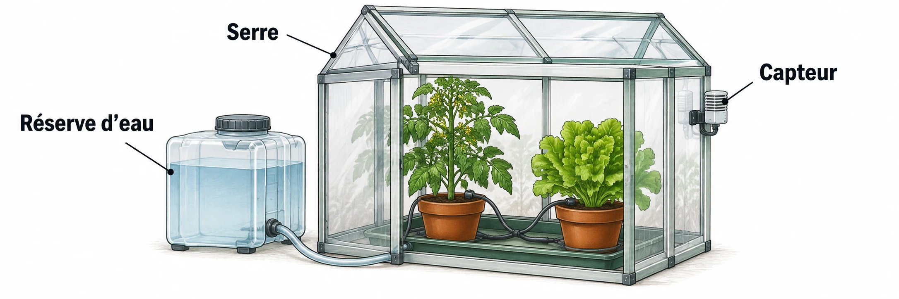

OBSERVER · EXPÉRIMENTER · EXPLIQUER
Arroser trois pots pendant les vacances
Choisis une réserve pour trois pots. Mesure les volumes, règle la durée, puis prépare un seul planning. Suis les questions Q1 à Q5 de ta fiche.

✎ Garde ta feuille à côté de toi.Ordinateur : manipulations et mesures simulées. Papier : relevés, réponses, calculs et croquis. Matériel réel : essai complémentaire si disponible.
Des observations pour expliquer
- Q1 : calcule la réserve et justifie ton choix sur papier.
- Q2–Q3 : relève les volumes, compare chaque mesure aux limites et écris ta conclusion.
- Q4 : complète le planning papier. Q5 : choisis les droits de partage avec les rôles indiqués sur ta fiche.
Appuie ton explication sur une valeur, un changement observé ou une comparaison. Distingue ce que montre le modèle et ce qui reste à vérifier.